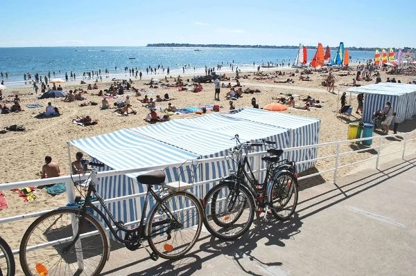

La Baule
Loire-Atlantique, France · paddle, windsurf, baignade

Une longue plage en arc de cercle sur la côte de Loire-Atlantique. La baie réunit plusieurs clubs nautiques pour une sortie en paddle ou en planche à voile.
- Lieu
- Loire-Atlantique, France
- Niveau
- Variable selon les conditions
- Activités
- paddle, windsurf, baignade
- Type d'eau
- Mer / océan
- Coordonnées
- 47.28, -2.39 (position approximative du secteur)
Ouvrir dans Ocean Buddy Télécharger sur l'App Store
Source : France.fr.